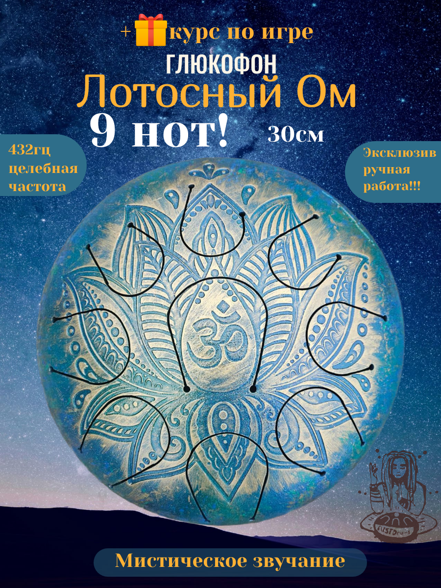
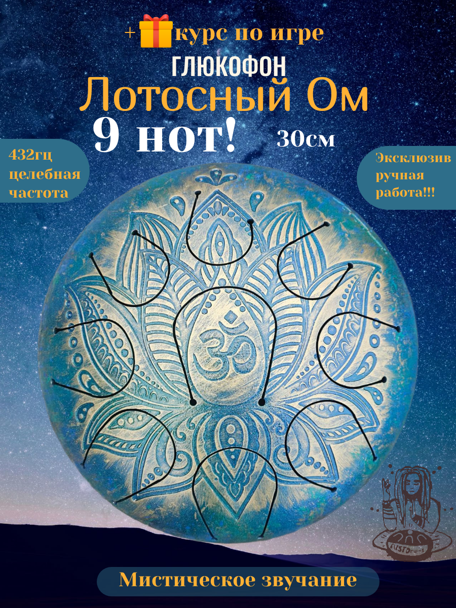

Глюкофон "Лотосный Ом"
Цена: 35000 ₽
Ручная работа, настройка акебоно, 9 нот. Создаёт целебные гармоники; частота 432 Гц придаёт спокойствие и глубину звучания.

Цена: 35000 ₽
Ручная работа, настройка акебоно, 9 нот. Создаёт целебные гармоники; частота 432 Гц придаёт спокойствие и глубину звучания.
